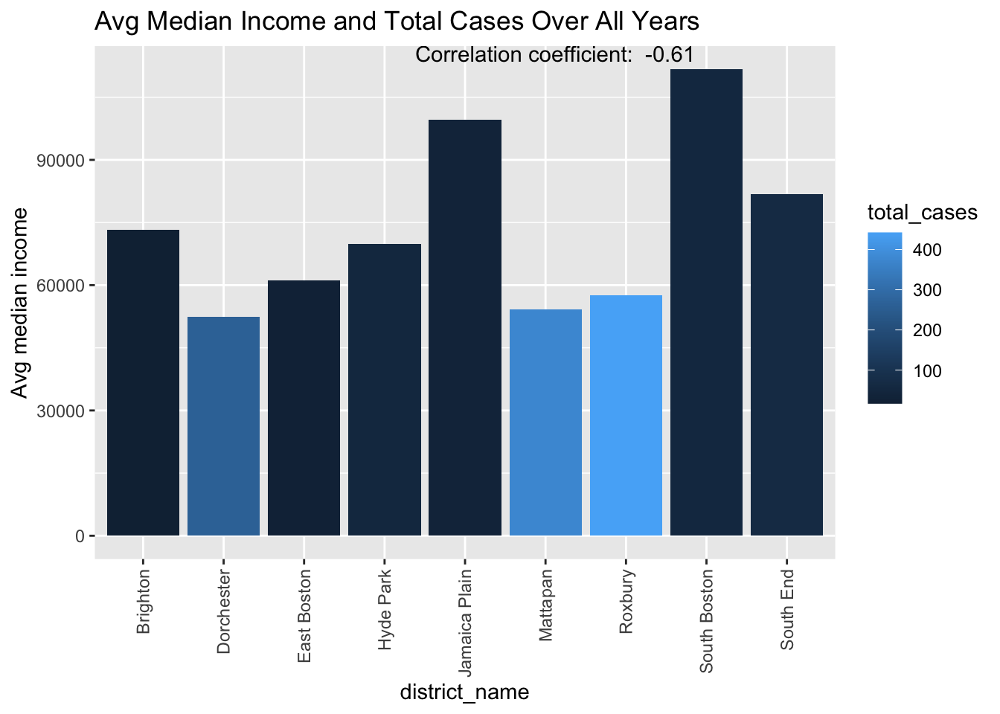
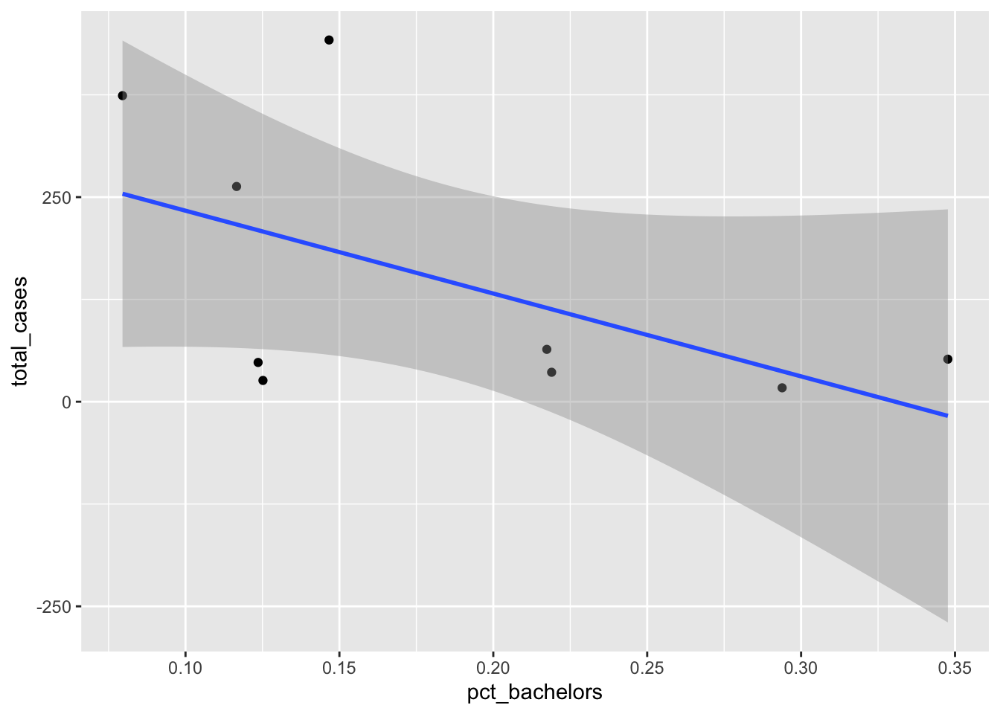
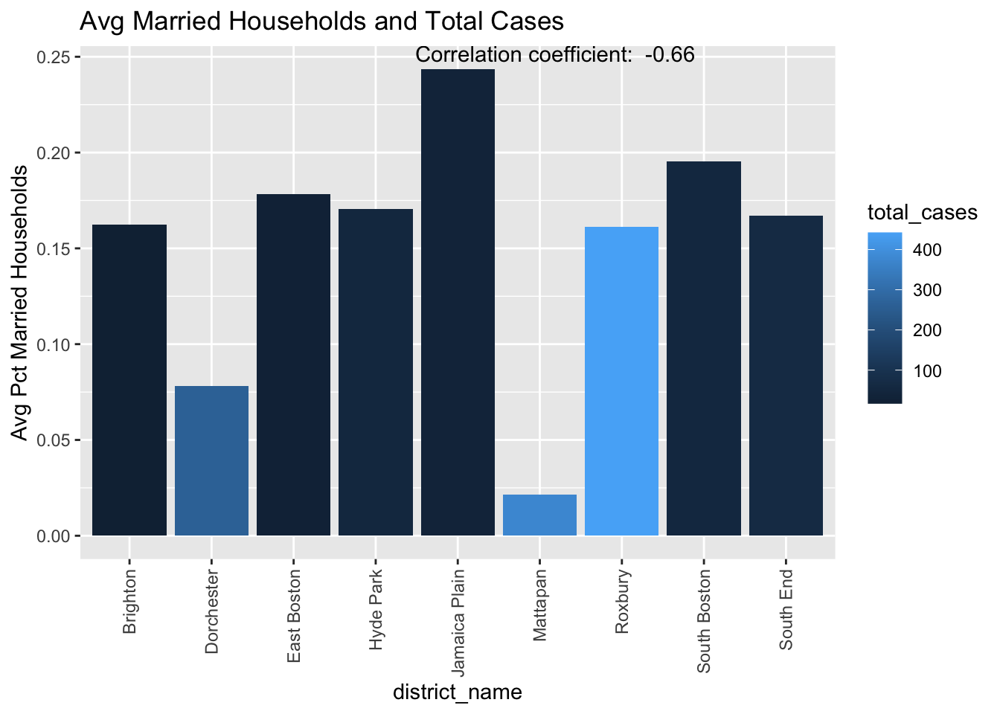

final_df<-readRDS('all_census_dat.rdr')
#write.csv(merge_geometry, file = "census_dat.csv",row.names = FALSE)
library(tidycensus)
library(tidyverse)── Attaching core tidyverse packages ──────────────────────── tidyverse 2.0.0 ──
✔ dplyr 1.1.4 ✔ readr 2.1.5
✔ forcats 1.0.0 ✔ stringr 1.5.1
✔ ggplot2 3.4.4 ✔ tibble 3.2.1
✔ lubridate 1.9.3 ✔ tidyr 1.3.0
✔ purrr 1.0.2
── Conflicts ────────────────────────────────────────── tidyverse_conflicts() ──
✖ dplyr::filter() masks stats::filter()
✖ dplyr::lag() masks stats::lag()
ℹ Use the conflicted package (<http://conflicted.r-lib.org/>) to force all conflicts to become errorslibrary(sandwich)
library(lmtest)Loading required package: zoo
Attaching package: 'zoo'
The following objects are masked from 'package:base':
as.Date, as.Date.numericlibrary(car)Loading required package: carData
Attaching package: 'car'
The following object is masked from 'package:dplyr':
recode
The following object is masked from 'package:purrr':
somelibrary(leaps)
library(segregation)
library(tigris)To enable caching of data, set `options(tigris_use_cache = TRUE)`
in your R script or .Rprofile.library(sf)Linking to GEOS 3.11.0, GDAL 3.5.3, PROJ 9.1.0; sf_use_s2() is TRUElibrary(olsrr)
Attaching package: 'olsrr'
The following object is masked from 'package:datasets':
rivers#shows correlation between income and total cases for each district. Lower income => more cases
#time to work plot
final_df%>%
group_by(district_name,year)%>%
na.omit(aggregate_time_to_work)%>%
summarise(work_time= mean(aggregate_time_to_work), total_cases = sum(!duplicated(incident_num))) %>%
ggplot(aes( work_time,total_cases))+
geom_point()+
geom_smooth(method ='lm')+
labs(y = 'Avg travel time to work',title = 'Avg Travel Time to Work and Total Cases')`summarise()` has grouped output by 'district_name'. You can override using the
`.groups` argument.
`geom_smooth()` using formula = 'y ~ x'#income plot
correlation_coef <- final_df%>%
group_by(district_name)%>%
summarise(medincome_mean= mean(household_medincome), total_cases = sum(!duplicated(incident_num))) %>%
summarise(correlation_coef = round(cor(total_cases, medincome_mean),2))
final_df%>%
group_by(district_name)%>%
summarise(medincome_mean= mean(household_medincome), total_cases = sum(!duplicated(incident_num))) %>%
ggplot(aes(district_name, medincome_mean,fill = total_cases))+
geom_bar(stat= 'identity')+
theme(axis.text.x = element_text(angle = 90, vjust = 0.5, hjust=1))+
labs(y = 'Avg median income',title = 'Avg Median Income and Total Cases Over All Years')+
annotate("text", x = Inf, y = Inf, label = paste("Correlation coefficient: ", correlation_coef), hjust = 1.5, vjust = 1)
#scatterplot with line of best fit
final_df%>%
group_by(district_name)%>%
summarise(medincome_mean= mean(household_medincome), total_cases = sum(!duplicated(incident_num))) %>%
ggplot(aes( medincome_mean,total_cases))+
geom_point()+
geom_smooth(method ='lm')+
labs(y = 'Avg median income',title = 'Avg Median Income and Total Cases Over All Years')+
annotate("text", x = Inf, y = Inf, label = paste("Correlation coefficient: ", correlation_coef), hjust = 1.5, vjust = 1)`geom_smooth()` using formula = 'y ~ x'
#Bachelors degree plot
correlation_coef <- final_df%>%
group_by(district_name)%>%
summarise(pct_not_enrolled= mean(bachelors_25/total_pop), total_cases = sum(!duplicated(incident_num)))%>%
summarise(correlation_coef = round(cor(total_cases, pct_not_enrolled),2))
final_df%>%
group_by(district_name)%>%
summarise(pct_bachelors= mean(bachelors_25/total_pop), total_cases = sum(!duplicated(incident_num))) %>%
ggplot(aes(district_name, pct_bachelors,fill = total_cases))+
geom_bar(stat= 'identity')+
theme(axis.text.x = element_text(angle = 90, vjust = 0.5, hjust=1))+
labs(y = 'Pct of Population with Bachelors ',title = 'Bachelors Degree and Total Cases')+
annotate("text", x = Inf, y = Inf, label = paste("Correlation coefficient: ", correlation_coef), hjust = 1.5, vjust = 1)
final_df%>%
group_by(district_name)%>%
summarise(pct_bachelors= mean(bachelors_25/total_pop), total_cases = sum(!duplicated(incident_num))) %>%
ggplot(aes(pct_bachelors, total_cases))+
geom_point()+
geom_smooth(method ='lm')`geom_smooth()` using formula = 'y ~ x'
#not in labor force plot
correlation_coef <- final_df%>%
group_by(district_name)%>%
summarise(unemployment_pct= mean(not_in_labor_force/total_pop), total_cases = sum(!duplicated(incident_num)))%>%
summarise(correlation_coef = round(cor(total_cases, unemployment_pct),2))
final_df%>%
group_by(district_name)%>%
summarise(unemployment_pct= mean(not_in_labor_force/total_pop), total_cases = sum(!duplicated(incident_num))) %>%
ggplot(aes(district_name, unemployment_pct,fill = total_cases))+
geom_bar(stat= 'identity')+
theme(axis.text.x = element_text(angle = 90, vjust = 0.5, hjust=1))+
labs(y = 'Pct Unemployed',title = 'Avg Unemployment and Total Cases')+
annotate("text", x = Inf, y = Inf, label = paste("Correlation coefficient: ", correlation_coef), hjust = 1.5, vjust = 1)final_df%>%
group_by(district_name)%>%
summarise(unemployment_pct= mean(not_in_labor_force/total_pop), total_cases = sum(!duplicated(incident_num))) %>%
ggplot(aes(unemployment_pct, total_cases))+
geom_point()+
geom_smooth(method ='lm')`geom_smooth()` using formula = 'y ~ x'#total cases for districts plot
final_df%>%
group_by(district_name)%>%
summarise(total_cases = sum(!duplicated(incident_num))) %>%
ggplot(aes(district_name,total_cases))+
geom_bar(stat= 'identity')+
theme(axis.text.x = element_text(angle = 90, vjust = 0.5, hjust=1))+
labs(title = 'Total Cases by District')
#single parent household plot
correlation_coef <- final_df%>%
group_by(district_name)%>%
summarise(single_household = mean(one_parent/ total_pop),total_cases = sum(!duplicated(incident_num))) %>%
summarise(correlation_coef = round(cor(single_household, total_cases),2))
final_df%>%
group_by(district_name)%>%
summarise(single_household = mean(one_parent/ total_pop),total_cases = sum(!duplicated(incident_num))) %>%
ggplot(aes(district_name,single_household, fill = total_cases))+
geom_bar(stat= 'identity')+
theme(axis.text.x = element_text(angle = 90, vjust = 0.5, hjust=1))+
labs(title = 'Pct of Households with Single Parent')+
annotate("text", x = Inf, y = Inf, label = paste("Correlation coefficient: ", correlation_coef), hjust = 1.5, vjust = 1)
final_df%>%
group_by(district_name)%>%
summarise(single_household = mean(one_parent/ total_pop),total_cases = sum(!duplicated(incident_num))) %>%
ggplot(aes(single_household, total_cases))+
geom_point()+
geom_smooth(method ='lm')`geom_smooth()` using formula = 'y ~ x'
#married househomes
correlation_coef <- final_df%>%
group_by(district_name)%>%
summarise(married_house = mean(married_households/total_house_units),total_cases = sum(!duplicated(incident_num))) %>%
summarise(correlation_coef = round(cor(married_house, total_cases),2))
final_df%>%
group_by(district_name)%>%
summarise(married_house_pct= mean(married_households/total_house_units), total_cases = sum(!duplicated(incident_num))) %>%
ggplot(aes(district_name, married_house_pct,fill = total_cases))+
geom_bar(stat='identity')+
theme(axis.text.x = element_text(angle = 90, vjust = 0.5, hjust=1))+
labs(y = 'Avg Pct Married Households',title = 'Avg Married Households and Total Cases ')+
annotate("text", x = Inf, y = Inf, label = paste("Correlation coefficient: ", correlation_coef), hjust = 1.5, vjust = 1)
final_df%>%
group_by(district_name)%>%
summarise(married_house_pct= mean(married_households/total_house_units), total_cases = sum(!duplicated(incident_num))) %>%
ggplot(aes(married_house_pct, total_cases))+
geom_point()+
geom_smooth(method ='lm')`geom_smooth()` using formula = 'y ~ x'#vacant househomes
correlation_coef <- final_df%>%
group_by(district_name)%>%
summarise(vaccant_house = mean(vacancy_status/total_house_units),total_cases = sum(!duplicated(incident_num))) %>%
summarise(correlation_coef = round(cor(vaccant_house, total_cases),2))
final_df%>%
group_by(district_name)%>%
summarise(vaccant_house_pct= mean(vacancy_status/total_house_units), total_cases = sum(!duplicated(incident_num))) %>%
ggplot(aes(district_name, vaccant_house_pct,fill = total_cases))+
geom_bar(stat='identity')+
theme(axis.text.x = element_text(angle = 90, vjust = 0.5, hjust=1))+
labs(y = 'Vacant Households ',title = 'Avg Vacant Households and Total Cases')+
annotate("text", x = Inf, y = Inf, label = paste("Correlation coefficient: ", correlation_coef), hjust = 1.5, vjust = 1)final_df%>%
group_by(district_name)%>%
summarise(vaccant_house_pct= mean(vacancy_status/total_house_units), total_cases = sum(!duplicated(incident_num))) %>%
ggplot(aes(vaccant_house_pct, total_cases))+
geom_point()+
geom_smooth(method ='lm')`geom_smooth()` using formula = 'y ~ x'lm_dat<-final_df%>%
group_by(district_name, year)%>%
summarise(aian_pct = mean(American_Indian_and_Alaska_Native_alone/total_pop),
nhpt_pct = mean(Native_Hawaiian_and_Other_Pacific_Islander_alone/total_pop),
asian_pct = mean(Asian_alone/total_pop),
pct_black = mean(Black_or_African_American_alone/total_pop),
pct_white = mean(White_alone/total_pop),
unemployment=mean(not_in_labor_force/total_pop),
medincome_mean= mean(household_medincome),
bachelors = mean(bachelors_25/total_pop),
one_parent= mean(one_parent/total_house_units),
married_house= mean(married_households/total_house_units),
vacant_houses = mean(vacancy_status/total_house_units),
travel_work = mean(aggregate_time_to_work),
total_cases = sum(!duplicated(incident_num)))`summarise()` has grouped output by 'district_name'. You can override using the
`.groups` argument.#OLS with all variables
ols<-lm(total_cases~travel_work+ pct_white+pct_black+asian_pct+nhpt_pct+aian_pct+district_name+ unemployment+ medincome_mean+bachelors+one_parent+ vacant_houses+married_house, data = lm_dat)
coeftest(ols, vcov. = vcovHC)
t test of coefficients:
Estimate Std. Error t value Pr(>|t|)
(Intercept) 9.7937e+01 1.0228e+02 0.9575 0.3442
travel_work -4.0187e-05 3.7838e-05 -1.0621 0.2947
pct_white -1.0627e+02 1.2048e+02 -0.8820 0.3832
pct_black 1.1077e+02 8.1762e+01 1.3548 0.1833
asian_pct -1.2785e+02 1.7671e+02 -0.7235 0.4737
nhpt_pct 2.2813e+03 2.7216e+03 0.8382 0.4070
aian_pct -4.9210e+02 5.5318e+02 -0.8896 0.3791
district_nameDorchester -5.4193e+01 5.6794e+01 -0.9542 0.3459
district_nameEast Boston -3.2850e+01 3.9127e+01 -0.8396 0.4063
district_nameHyde Park -1.0153e+02 6.8889e+01 -1.4738 0.1486
district_nameJamaica Plain -4.6963e+01 3.9444e+01 -1.1906 0.2410
district_nameMattapan -9.5009e+01 8.9801e+01 -1.0580 0.2966
district_nameRoxbury -2.7633e+01 5.0993e+01 -0.5419 0.5910
district_nameSouth Boston -1.1259e+01 2.9941e+01 -0.3760 0.7089
district_nameSouth End -2.2583e+01 1.9381e+01 -1.1652 0.2510
unemployment -5.9114e+01 1.2267e+02 -0.4819 0.6326
medincome_mean -1.4528e-04 2.4802e-04 -0.5858 0.5614
bachelors -1.7955e+01 1.4549e+02 -0.1234 0.9024
one_parent -2.9040e+00 1.3005e+02 -0.0223 0.9823
vacant_houses -1.2311e+01 1.2749e+02 -0.0966 0.9236
married_house 3.3916e+02 2.1558e+02 1.5733 0.1237summary(ols) #92 adjusted Rsquared good for forecasting
Call:
lm(formula = total_cases ~ travel_work + pct_white + pct_black +
asian_pct + nhpt_pct + aian_pct + district_name + unemployment +
medincome_mean + bachelors + one_parent + vacant_houses +
married_house, data = lm_dat)
Residuals:
Min 1Q Median 3Q Max
-15.505 -2.933 0.268 2.451 13.928
Coefficients:
Estimate Std. Error t value Pr(>|t|)
(Intercept) 9.794e+01 7.725e+01 1.268 0.2124
travel_work -4.019e-05 3.357e-05 -1.197 0.2384
pct_white -1.063e+02 8.608e+01 -1.235 0.2244
pct_black 1.108e+02 5.930e+01 1.868 0.0693 .
asian_pct -1.278e+02 1.538e+02 -0.831 0.4110
nhpt_pct 2.281e+03 2.363e+03 0.966 0.3402
aian_pct -4.921e+02 5.243e+02 -0.939 0.3537
district_nameDorchester -5.419e+01 4.178e+01 -1.297 0.2023
district_nameEast Boston -3.285e+01 3.243e+01 -1.013 0.3173
district_nameHyde Park -1.015e+02 5.010e+01 -2.026 0.0496 *
district_nameJamaica Plain -4.696e+01 2.872e+01 -1.635 0.1101
district_nameMattapan -9.501e+01 6.238e+01 -1.523 0.1358
district_nameRoxbury -2.763e+01 3.612e+01 -0.765 0.4488
district_nameSouth Boston -1.126e+01 2.772e+01 -0.406 0.6868
district_nameSouth End -2.258e+01 1.882e+01 -1.200 0.2375
unemployment -5.911e+01 9.358e+01 -0.632 0.5313
medincome_mean -1.453e-04 1.769e-04 -0.821 0.4164
bachelors -1.795e+01 1.178e+02 -0.152 0.8796
one_parent -2.904e+00 1.260e+02 -0.023 0.9817
vacant_houses -1.231e+01 1.089e+02 -0.113 0.9106
married_house 3.392e+02 1.763e+02 1.924 0.0617 .
---
Signif. codes: 0 '***' 0.001 '**' 0.01 '*' 0.05 '.' 0.1 ' ' 1
Residual standard error: 6.091 on 39 degrees of freedom
(3 observations deleted due to missingness)
Multiple R-squared: 0.9426, Adjusted R-squared: 0.9131
F-statistic: 32 on 20 and 39 DF, p-value: < 2.2e-16vif(ols) # vif, look for correlated variables,anything above 5 high collinearity, below 1 no collinearity, above 1 medium collinearity GVIF Df GVIF^(1/(2*Df))
travel_work 6.591104e+01 1 8.118561
pct_white 6.032264e+02 1 24.560668
pct_black 3.741905e+02 1 19.344004
asian_pct 1.338921e+02 1 11.571176
nhpt_pct 4.085129e+00 1 2.021170
aian_pct 2.913079e+00 1 1.706774
district_name 8.835884e+10 8 4.832152
unemployment 2.529459e+01 1 5.029372
medincome_mean 2.393767e+01 1 4.892614
bachelors 1.775908e+02 1 13.326321
one_parent 1.548519e+02 1 12.443952
vacant_houses 1.071442e+01 1 3.273289
married_house 1.701447e+02 1 13.043953ols_step_forward_p(ols) #forward and backwards variable selection
Stepwise Summary
-----------------------------------------------------------------------------
Step Variable AIC SBC SBIC R2 Adj. R2
-----------------------------------------------------------------------------
0 Base Model 536.679 540.868 362.921 0.00000 0.00000
1 district_name 400.745 421.689 216.894 0.92052 0.90805
2 pct_black 398.355 421.393 215.182 0.92613 0.91283
3 married_house 396.764 421.896 214.505 0.93042 0.91622
4 pct_white 396.361 423.588 215.099 0.93315 0.91783
5 medincome_mean 395.147 424.468 215.297 0.93664 0.92046
6 travel_work 395.497 426.912 216.916 0.93836 0.92093
-----------------------------------------------------------------------------
Final Model Output
------------------
Model Summary
---------------------------------------------------------------
R 0.969 RMSE 5.088
R-Squared 0.938 MSE 33.766
Adj. R-Squared 0.921 Coef. Var 29.372
Pred R-Squared 0.900 AIC 395.497
MAE 3.526 SBC 426.912
---------------------------------------------------------------
RMSE: Root Mean Square Error
MSE: Mean Square Error
MAE: Mean Absolute Error
AIC: Akaike Information Criteria
SBC: Schwarz Bayesian Criteria
ANOVA
---------------------------------------------------------------------
Sum of
Squares DF Mean Square F Sig.
---------------------------------------------------------------------
Regression 23642.970 13 1818.690 53.862 0.0000
Residual 1553.214 46 33.766
Total 25196.183 59
---------------------------------------------------------------------
Parameter Estimates
------------------------------------------------------------------------------------------------------------
model Beta Std. Error Std. Beta t Sig lower upper
------------------------------------------------------------------------------------------------------------
(Intercept) 55.827 37.944 1.471 0.148 -20.550 132.204
district_nameDorchester -48.253 27.773 -0.706 -1.737 0.089 -104.157 7.650
district_nameEast Boston -20.876 10.466 -0.346 -1.995 0.052 -41.944 0.192
district_nameHyde Park -87.876 31.210 -1.070 -2.816 0.007 -150.699 -25.053
district_nameJamaica Plain -39.413 16.384 -0.419 -2.406 0.020 -72.391 -6.434
district_nameMattapan -72.996 43.736 -1.144 -1.669 0.102 -161.031 15.040
district_nameRoxbury -19.653 24.449 -0.326 -0.804 0.426 -68.867 29.561
district_nameSouth Boston 4.960 10.713 0.082 0.463 0.646 -16.605 26.525
district_nameSouth End -26.366 14.177 -0.437 -1.860 0.069 -54.903 2.171
pct_black 102.308 49.003 1.281 2.088 0.042 3.670 200.947
married_house 396.901 134.101 1.127 2.960 0.005 126.969 666.833
pct_white -133.780 65.920 -1.465 -2.029 0.048 -266.471 -1.090
medincome_mean 0.000 0.000 -0.148 -1.385 0.173 0.000 0.000
travel_work 0.000 0.000 -0.214 -1.133 0.263 0.000 0.000
------------------------------------------------------------------------------------------------------------ols_step_backward_p(ols)
Stepwise Summary
----------------------------------------------------------------------------
Step Variable AIC SBC SBIC R2 Adj. R2
----------------------------------------------------------------------------
0 Full Model 405.251 451.327 235.476 0.94257 0.91311
1 one_parent 403.252 447.233 232.399 0.94257 0.91528
2 vacant_houses 401.271 443.158 229.330 0.94255 0.91732
3 bachelors 399.321 439.113 226.279 0.94250 0.91923
4 unemployment 398.064 435.762 223.611 0.94178 0.92012
5 nhpt_pct 397.058 432.662 221.170 0.94081 0.92063
6 aian_pct 396.155 429.665 218.901 0.93972 0.92096
7 asian_pct 395.497 426.912 216.916 0.93836 0.92093
----------------------------------------------------------------------------
Final Model Output
------------------
Model Summary
---------------------------------------------------------------
R 0.969 RMSE 5.088
R-Squared 0.938 MSE 33.766
Adj. R-Squared 0.921 Coef. Var 29.372
Pred R-Squared 0.900 AIC 395.497
MAE 3.526 SBC 426.912
---------------------------------------------------------------
RMSE: Root Mean Square Error
MSE: Mean Square Error
MAE: Mean Absolute Error
AIC: Akaike Information Criteria
SBC: Schwarz Bayesian Criteria
ANOVA
---------------------------------------------------------------------
Sum of
Squares DF Mean Square F Sig.
---------------------------------------------------------------------
Regression 23642.970 13 1818.690 53.862 0.0000
Residual 1553.214 46 33.766
Total 25196.183 59
---------------------------------------------------------------------
Parameter Estimates
------------------------------------------------------------------------------------------------------------
model Beta Std. Error Std. Beta t Sig lower upper
------------------------------------------------------------------------------------------------------------
(Intercept) 55.827 37.944 1.471 0.148 -20.550 132.204
travel_work 0.000 0.000 -0.214 -1.133 0.263 0.000 0.000
pct_white -133.780 65.920 -1.465 -2.029 0.048 -266.471 -1.090
pct_black 102.308 49.003 1.281 2.088 0.042 3.670 200.947
district_nameDorchester -48.253 27.773 -0.706 -1.737 0.089 -104.157 7.650
district_nameEast Boston -20.876 10.466 -0.346 -1.995 0.052 -41.944 0.192
district_nameHyde Park -87.876 31.210 -1.070 -2.816 0.007 -150.699 -25.053
district_nameJamaica Plain -39.413 16.384 -0.419 -2.406 0.020 -72.391 -6.434
district_nameMattapan -72.996 43.736 -1.144 -1.669 0.102 -161.031 15.040
district_nameRoxbury -19.653 24.449 -0.326 -0.804 0.426 -68.867 29.561
district_nameSouth Boston 4.960 10.713 0.082 0.463 0.646 -16.605 26.525
district_nameSouth End -26.366 14.177 -0.437 -1.860 0.069 -54.903 2.171
medincome_mean 0.000 0.000 -0.148 -1.385 0.173 0.000 0.000
married_house 396.901 134.101 1.127 2.960 0.005 126.969 666.833
------------------------------------------------------------------------------------------------------------#OLS socieoeconomic variables
ols<-lm(total_cases~ travel_work+unemployment +medincome_mean+bachelors+one_parent+married_house, data = lm_dat)
coeftest(ols, vcov. = vcovHC)
t test of coefficients:
Estimate Std. Error t value Pr(>|t|)
(Intercept) 9.4852e+01 5.1242e+01 1.8511 0.069735 .
travel_work -6.4966e-05 2.1939e-05 -2.9612 0.004577 **
unemployment -7.4452e+01 9.3756e+01 -0.7941 0.430679
medincome_mean -3.6212e-04 2.2675e-04 -1.5971 0.116199
bachelors 2.9285e+01 4.4059e+01 0.6647 0.509138
one_parent 6.6162e+01 5.6817e+01 1.1645 0.249451
married_house -5.2963e+01 4.7830e+01 -1.1073 0.273149
---
Signif. codes: 0 '***' 0.001 '**' 0.01 '*' 0.05 '.' 0.1 ' ' 1summary(ols)
Call:
lm(formula = total_cases ~ travel_work + unemployment + medincome_mean +
bachelors + one_parent + married_house, data = lm_dat)
Residuals:
Min 1Q Median 3Q Max
-24.287 -9.171 -2.724 8.861 29.983
Coefficients:
Estimate Std. Error t value Pr(>|t|)
(Intercept) 9.485e+01 5.419e+01 1.750 0.08586 .
travel_work -6.497e-05 2.026e-05 -3.207 0.00228 **
unemployment -7.445e+01 1.056e+02 -0.705 0.48379
medincome_mean -3.621e-04 1.915e-04 -1.891 0.06407 .
bachelors 2.929e+01 4.853e+01 0.603 0.54878
one_parent 6.616e+01 6.081e+01 1.088 0.28155
married_house -5.296e+01 4.668e+01 -1.135 0.26165
---
Signif. codes: 0 '***' 0.001 '**' 0.01 '*' 0.05 '.' 0.1 ' ' 1
Residual standard error: 14.14 on 53 degrees of freedom
(3 observations deleted due to missingness)
Multiple R-squared: 0.5797, Adjusted R-squared: 0.5321
F-statistic: 12.18 on 6 and 53 DF, p-value: 1.472e-08vif(ols) travel_work unemployment medincome_mean bachelors one_parent
4.458621 5.978254 5.209543 5.598985 6.697242
married_house
2.214488 ols_step_forward_p(ols)
Stepwise Summary
-----------------------------------------------------------------------------
Step Variable AIC SBC SBIC R2 Adj. R2
-----------------------------------------------------------------------------
0 Base Model 536.679 540.868 364.808 0.00000 0.00000
1 bachelors 516.965 523.248 345.225 0.30365 0.29164
2 travel_work 502.456 510.833 331.562 0.47115 0.45259
3 married_house 497.438 507.910 327.257 0.52952 0.50432
4 medincome_mean 497.020 509.586 327.272 0.54811 0.51524
5 one_parent 495.238 509.899 326.395 0.57571 0.53642
-----------------------------------------------------------------------------
Final Model Output
------------------
Model Summary
----------------------------------------------------------------
R 0.759 RMSE 13.348
R-Squared 0.576 MSE 197.972
Adj. R-Squared 0.536 Coef. Var 71.122
Pred R-Squared 0.487 AIC 495.238
MAE 10.939 SBC 509.899
----------------------------------------------------------------
RMSE: Root Mean Square Error
MSE: Mean Square Error
MAE: Mean Absolute Error
AIC: Akaike Information Criteria
SBC: Schwarz Bayesian Criteria
ANOVA
---------------------------------------------------------------------
Sum of
Squares DF Mean Square F Sig.
---------------------------------------------------------------------
Regression 14505.712 5 2901.142 14.654 0.0000
Residual 10690.472 54 197.972
Total 25196.183 59
---------------------------------------------------------------------
Parameter Estimates
-----------------------------------------------------------------------------------------------
model Beta Std. Error Std. Beta t Sig lower upper
-----------------------------------------------------------------------------------------------
(Intercept) 58.228 15.403 3.780 0.000 27.346 89.110
bachelors 32.335 48.110 0.140 0.672 0.504 -64.120 128.791
travel_work 0.000 0.000 -0.490 -4.996 0.000 0.000 0.000
married_house -47.530 45.825 -0.135 -1.037 0.304 -139.404 44.344
medincome_mean 0.000 0.000 -0.287 -1.934 0.058 -0.001 0.000
one_parent 91.511 48.825 0.347 1.874 0.066 -6.377 189.399
-----------------------------------------------------------------------------------------------ols_step_backward_p(ols)
Stepwise Summary
---------------------------------------------------------------------------
Step Variable AIC SBC SBIC R2 Adj. R2
---------------------------------------------------------------------------
0 Full Model 496.678 513.433 328.220 0.57965 0.53207
1 bachelors 495.089 509.749 326.278 0.57677 0.53758
2 unemployment 493.738 506.304 324.563 0.57216 0.54105
---------------------------------------------------------------------------
Final Model Output
------------------
Model Summary
----------------------------------------------------------------
R 0.756 RMSE 13.404
R-Squared 0.572 MSE 195.998
Adj. R-Squared 0.541 Coef. Var 70.766
Pred R-Squared 0.495 AIC 493.738
MAE 10.997 SBC 506.304
----------------------------------------------------------------
RMSE: Root Mean Square Error
MSE: Mean Square Error
MAE: Mean Absolute Error
AIC: Akaike Information Criteria
SBC: Schwarz Bayesian Criteria
ANOVA
---------------------------------------------------------------------
Sum of
Squares DF Mean Square F Sig.
---------------------------------------------------------------------
Regression 14416.283 4 3604.071 18.388 0.0000
Residual 10779.900 55 195.998
Total 25196.183 59
---------------------------------------------------------------------
Parameter Estimates
-----------------------------------------------------------------------------------------------
model Beta Std. Error Std. Beta t Sig lower upper
-----------------------------------------------------------------------------------------------
(Intercept) 62.366 14.049 4.439 0.000 34.212 90.520
travel_work 0.000 0.000 -0.465 -5.154 0.000 0.000 0.000
medincome_mean 0.000 0.000 -0.222 -1.976 0.053 0.000 0.000
one_parent 68.863 35.156 0.261 1.959 0.055 -1.592 139.318
married_house -53.755 44.655 -0.153 -1.204 0.234 -143.246 35.736
-----------------------------------------------------------------------------------------------plot(ols)#OLS race and socieoeconomic variables
ols<-lm(total_cases~ asian_pct+pct_white+pct_black+nhpt_pct+aian_pct+travel_work+unemployment +medincome_mean+bachelors+one_parent+married_house, data = lm_dat)
coeftest(ols, vcov. = vcovHC)
t test of coefficients:
Estimate Std. Error t value Pr(>|t|)
(Intercept) 1.3063e+02 6.7256e+01 1.9423 0.057984 .
asian_pct -2.4715e+02 9.4098e+01 -2.6265 0.011544 *
pct_white -1.2999e+02 5.6956e+01 -2.2823 0.026942 *
pct_black -1.7560e+01 4.0330e+01 -0.4354 0.665222
nhpt_pct -1.9587e+03 3.4125e+03 -0.5740 0.568667
aian_pct 3.1088e+02 1.2231e+03 0.2542 0.800456
travel_work -4.6825e-05 2.4781e-05 -1.8895 0.064867 .
unemployment 7.7196e+01 1.4762e+02 0.5229 0.603430
medincome_mean -5.9961e-04 2.3820e-04 -2.5173 0.015220 *
bachelors 2.0468e+02 7.3854e+01 2.7714 0.007918 **
one_parent -1.4436e+02 7.9823e+01 -1.8085 0.076799 .
married_house 8.1739e+01 1.0889e+02 0.7507 0.456515
---
Signif. codes: 0 '***' 0.001 '**' 0.01 '*' 0.05 '.' 0.1 ' ' 1summary(ols)
Call:
lm(formula = total_cases ~ asian_pct + pct_white + pct_black +
nhpt_pct + aian_pct + travel_work + unemployment + medincome_mean +
bachelors + one_parent + married_house, data = lm_dat)
Residuals:
Min 1Q Median 3Q Max
-24.3517 -6.8675 0.5879 5.6504 21.9139
Coefficients:
Estimate Std. Error t value Pr(>|t|)
(Intercept) 1.306e+02 5.228e+01 2.498 0.015951 *
asian_pct -2.471e+02 6.861e+01 -3.602 0.000747 ***
pct_white -1.300e+02 4.768e+01 -2.726 0.008916 **
pct_black -1.756e+01 2.902e+01 -0.605 0.547983
nhpt_pct -1.959e+03 3.613e+03 -0.542 0.590233
aian_pct 3.109e+02 8.590e+02 0.362 0.719018
travel_work -4.683e-05 2.093e-05 -2.237 0.029956 *
unemployment 7.720e+01 1.252e+02 0.617 0.540297
medincome_mean -5.996e-04 1.967e-04 -3.049 0.003734 **
bachelors 2.047e+02 7.339e+01 2.789 0.007559 **
one_parent -1.444e+02 6.191e+01 -2.332 0.023967 *
married_house 8.174e+01 8.164e+01 1.001 0.321769
---
Signif. codes: 0 '***' 0.001 '**' 0.01 '*' 0.05 '.' 0.1 ' ' 1
Residual standard error: 11.14 on 48 degrees of freedom
(3 observations deleted due to missingness)
Multiple R-squared: 0.7637, Adjusted R-squared: 0.7096
F-statistic: 14.11 on 11 and 48 DF, p-value: 1.45e-11vif(ols) asian_pct pct_white pct_black nhpt_pct aian_pct
7.969246 55.376014 26.808796 2.857756 2.339456
travel_work unemployment medincome_mean bachelors one_parent
7.667755 13.536832 8.856232 20.632077 11.184373
married_house
10.914923 ols_step_forward_p(ols)
Stepwise Summary
-----------------------------------------------------------------------------
Step Variable AIC SBC SBIC R2 Adj. R2
-----------------------------------------------------------------------------
0 Base Model 536.679 540.868 364.004 0.00000 0.00000
1 pct_black 496.985 503.269 324.746 0.50087 0.49226
2 travel_work 485.775 494.152 313.789 0.59951 0.58546
3 medincome_mean 481.693 492.164 309.881 0.63812 0.61873
4 asian_pct 478.236 490.802 306.879 0.66958 0.64555
5 one_parent 471.328 485.989 301.496 0.71516 0.68879
-----------------------------------------------------------------------------
Final Model Output
------------------
Model Summary
---------------------------------------------------------------
R 0.846 RMSE 10.937
R-Squared 0.715 MSE 132.904
Adj. R-Squared 0.689 Coef. Var 58.273
Pred R-Squared 0.651 AIC 471.328
MAE 8.960 SBC 485.989
---------------------------------------------------------------
RMSE: Root Mean Square Error
MSE: Mean Square Error
MAE: Mean Absolute Error
AIC: Akaike Information Criteria
SBC: Schwarz Bayesian Criteria
ANOVA
---------------------------------------------------------------------
Sum of
Squares DF Mean Square F Sig.
---------------------------------------------------------------------
Regression 18019.393 5 3603.879 27.116 0.0000
Residual 7176.791 54 132.904
Total 25196.183 59
---------------------------------------------------------------------
Parameter Estimates
------------------------------------------------------------------------------------------------
model Beta Std. Error Std. Beta t Sig lower upper
------------------------------------------------------------------------------------------------
(Intercept) 100.173 16.623 6.026 0.000 66.845 133.500
pct_black 46.698 11.284 0.585 4.138 0.000 24.075 69.321
travel_work 0.000 0.000 -0.480 -5.526 0.000 0.000 0.000
medincome_mean 0.000 0.000 -0.426 -4.158 0.000 -0.001 0.000
asian_pct -162.440 43.028 -0.469 -3.775 0.000 -248.706 -76.175
one_parent -149.799 50.957 -0.568 -2.940 0.005 -251.962 -47.637
------------------------------------------------------------------------------------------------ols_step_backward_p(ols)
Stepwise Summary
---------------------------------------------------------------------------
Step Variable AIC SBC SBIC R2 Adj. R2
---------------------------------------------------------------------------
0 Full Model 472.112 499.339 307.715 0.76373 0.70958
1 aian_pct 470.276 495.408 305.307 0.76308 0.71473
2 nhpt_pct 468.594 491.632 303.007 0.76182 0.71895
3 unemployment 467.023 487.966 300.804 0.76012 0.72249
4 pct_black 465.460 484.309 298.644 0.75836 0.72583
---------------------------------------------------------------------------
Final Model Output
------------------
Model Summary
---------------------------------------------------------------
R 0.871 RMSE 10.073
R-Squared 0.758 MSE 117.084
Adj. R-Squared 0.726 Coef. Var 54.695
Pred R-Squared 0.683 AIC 465.460
MAE 8.094 SBC 484.309
---------------------------------------------------------------
RMSE: Root Mean Square Error
MSE: Mean Square Error
MAE: Mean Absolute Error
AIC: Akaike Information Criteria
SBC: Schwarz Bayesian Criteria
ANOVA
---------------------------------------------------------------------
Sum of
Squares DF Mean Square F Sig.
---------------------------------------------------------------------
Regression 19107.822 7 2729.689 23.314 0.0000
Residual 6088.362 52 117.084
Total 25196.183 59
---------------------------------------------------------------------
Parameter Estimates
-------------------------------------------------------------------------------------------------
model Beta Std. Error Std. Beta t Sig lower upper
-------------------------------------------------------------------------------------------------
(Intercept) 144.109 20.189 7.138 0.000 103.597 184.622
asian_pct -212.156 44.434 -0.612 -4.775 0.000 -301.319 -122.994
pct_white -111.545 27.583 -1.221 -4.044 0.000 -166.895 -56.195
travel_work 0.000 0.000 -0.538 -6.344 0.000 0.000 0.000
medincome_mean -0.001 0.000 -0.700 -5.262 0.000 -0.001 0.000
bachelors 180.057 52.901 0.782 3.404 0.001 73.903 286.211
one_parent -142.547 55.966 -0.540 -2.547 0.014 -254.851 -30.242
married_house 108.821 69.717 0.309 1.561 0.125 -31.077 248.719
-------------------------------------------------------------------------------------------------plot(ols)#OLS socieoeconomic and location
ols<-lm(total_cases~travel_work+district_name+ unemployment+ medincome_mean+bachelors+one_parent+vacant_houses+married_house, data = lm_dat)
coeftest(ols, vcov. = vcovHC)
t test of coefficients:
Estimate Std. Error t value Pr(>|t|)
(Intercept) 1.6828e+01 5.5427e+01 0.3036 0.76287
travel_work -1.6749e-05 3.2469e-05 -0.5159 0.60853
district_nameDorchester 2.4232e+01 2.9318e+01 0.8265 0.41298
district_nameEast Boston -1.0101e+01 2.2265e+01 -0.4537 0.65230
district_nameHyde Park -2.5818e+00 3.0135e+01 -0.0857 0.93211
district_nameJamaica Plain -1.3413e+00 2.0267e+01 -0.0662 0.94754
district_nameMattapan 4.5283e+01 3.4173e+01 1.3251 0.19197
district_nameRoxbury 4.7227e+01 2.1294e+01 2.2178 0.03178 *
district_nameSouth Boston -1.0937e+01 2.2289e+01 -0.4907 0.62609
district_nameSouth End 3.7975e+00 1.7222e+01 0.2205 0.82650
unemployment -1.1044e+02 1.3417e+02 -0.8231 0.41487
medincome_mean -1.2695e-04 1.7467e-04 -0.7268 0.47119
bachelors 3.8170e+01 9.3347e+01 0.4089 0.68460
one_parent 7.1493e+01 1.3505e+02 0.5294 0.59920
vacant_houses 3.0212e+01 1.1801e+02 0.2560 0.79913
married_house 1.2300e+02 1.2927e+02 0.9515 0.34655
---
Signif. codes: 0 '***' 0.001 '**' 0.01 '*' 0.05 '.' 0.1 ' ' 1summary(ols)
Call:
lm(formula = total_cases ~ travel_work + district_name + unemployment +
medincome_mean + bachelors + one_parent + vacant_houses +
married_house, data = lm_dat)
Residuals:
Min 1Q Median 3Q Max
-20.2346 -2.4600 -0.3183 2.5535 14.5437
Coefficients:
Estimate Std. Error t value Pr(>|t|)
(Intercept) 1.683e+01 5.376e+01 0.313 0.756
travel_work -1.675e-05 2.638e-05 -0.635 0.529
district_nameDorchester 2.423e+01 2.262e+01 1.071 0.290
district_nameEast Boston -1.010e+01 1.821e+01 -0.555 0.582
district_nameHyde Park -2.582e+00 2.592e+01 -0.100 0.921
district_nameJamaica Plain -1.341e+00 1.972e+01 -0.068 0.946
district_nameMattapan 4.528e+01 2.718e+01 1.666 0.103
district_nameRoxbury 4.723e+01 1.956e+01 2.414 0.020 *
district_nameSouth Boston -1.094e+01 1.933e+01 -0.566 0.574
district_nameSouth End 3.798e+00 1.533e+01 0.248 0.805
unemployment -1.104e+02 9.054e+01 -1.220 0.229
medincome_mean -1.269e-04 1.598e-04 -0.795 0.431
bachelors 3.817e+01 1.010e+02 0.378 0.707
one_parent 7.149e+01 1.243e+02 0.575 0.568
vacant_houses 3.021e+01 9.914e+01 0.305 0.762
married_house 1.230e+02 1.327e+02 0.927 0.359
---
Signif. codes: 0 '***' 0.001 '**' 0.01 '*' 0.05 '.' 0.1 ' ' 1
Residual standard error: 6.379 on 44 degrees of freedom
(3 observations deleted due to missingness)
Multiple R-squared: 0.9289, Adjusted R-squared: 0.9047
F-statistic: 38.34 on 15 and 44 DF, p-value: < 2.2e-16vif(ols) GVIF Df GVIF^(1/(2*Df))
travel_work 3.710835e+01 1 6.091663
district_name 1.948618e+07 8 2.855012
unemployment 2.158975e+01 1 4.646478
medincome_mean 1.781252e+01 1 4.220488
bachelors 1.191075e+02 1 10.913640
one_parent 1.374741e+02 1 11.724935
vacant_houses 8.095400e+00 1 2.845242
married_house 8.786643e+01 1 9.373709ols_step_forward_p(ols)
Stepwise Summary
----------------------------------------------------------------------------
Step Variable AIC SBC SBIC R2 Adj. R2
----------------------------------------------------------------------------
0 Base Model 536.679 540.868 362.969 0.00000 0.00000
1 district_name 400.745 421.689 217.254 0.92052 0.90805
2 married_house 400.000 423.038 217.233 0.92407 0.91041
----------------------------------------------------------------------------
Final Model Output
------------------
Model Summary
---------------------------------------------------------------
R 0.961 RMSE 5.647
R-Squared 0.924 MSE 38.262
Adj. R-Squared 0.910 Coef. Var 31.267
Pred R-Squared 0.891 AIC 400.000
MAE 3.905 SBC 423.038
---------------------------------------------------------------
RMSE: Root Mean Square Error
MSE: Mean Square Error
MAE: Mean Absolute Error
AIC: Akaike Information Criteria
SBC: Schwarz Bayesian Criteria
ANOVA
---------------------------------------------------------------------
Sum of
Squares DF Mean Square F Sig.
---------------------------------------------------------------------
Regression 23283.101 9 2587.011 67.614 0.0000
Residual 1913.083 50 38.262
Total 25196.183 59
---------------------------------------------------------------------
Parameter Estimates
----------------------------------------------------------------------------------------------------------
model Beta Std. Error Std. Beta t Sig lower upper
----------------------------------------------------------------------------------------------------------
(Intercept) -17.728 13.159 -1.347 0.184 -44.159 8.704
district_nameDorchester 37.700 7.433 0.552 5.072 0.000 22.771 52.630
district_nameEast Boston -1.122 3.424 -0.019 -0.328 0.744 -8.000 5.755
district_nameHyde Park 9.007 3.830 0.110 2.352 0.023 1.314 16.700
district_nameJamaica Plain -0.415 7.923 -0.004 -0.052 0.958 -16.329 15.499
district_nameMattapan 61.188 11.581 0.959 5.283 0.000 37.927 84.449
district_nameRoxbury 53.152 3.093 0.882 17.185 0.000 46.939 59.364
district_nameSouth Boston 0.240 4.107 0.004 0.058 0.954 -8.010 8.490
district_nameSouth End 5.235 3.121 0.087 1.677 0.100 -1.034 11.503
married_house 123.648 80.821 0.351 1.530 0.132 -38.686 285.981
----------------------------------------------------------------------------------------------------------ols_step_backward_p(ols)
Stepwise Summary
----------------------------------------------------------------------------
Step Variable AIC SBC SBIC R2 Adj. R2
----------------------------------------------------------------------------
0 Full Model 408.032 443.636 230.040 0.92893 0.90470
1 vacant_houses 406.158 439.668 227.398 0.92878 0.90663
2 bachelors 404.353 435.768 224.815 0.92855 0.90836
3 one_parent 402.612 431.932 222.299 0.92824 0.90992
4 travel_work 400.969 428.195 219.887 0.92781 0.91127
5 married_house 399.525 424.657 217.675 0.92714 0.91227
----------------------------------------------------------------------------
Final Model Output
------------------
Model Summary
---------------------------------------------------------------
R 0.963 RMSE 5.531
R-Squared 0.927 MSE 37.464
Adj. R-Squared 0.912 Coef. Var 30.939
Pred R-Squared 0.889 AIC 399.525
MAE 3.921 SBC 424.657
---------------------------------------------------------------
RMSE: Root Mean Square Error
MSE: Mean Square Error
MAE: Mean Absolute Error
AIC: Akaike Information Criteria
SBC: Schwarz Bayesian Criteria
ANOVA
---------------------------------------------------------------------
Sum of
Squares DF Mean Square F Sig.
---------------------------------------------------------------------
Regression 23360.430 10 2336.043 62.354 0.0000
Residual 1835.753 49 37.464
Total 25196.183 59
---------------------------------------------------------------------
Parameter Estimates
-----------------------------------------------------------------------------------------------------------
model Beta Std. Error Std. Beta t Sig lower upper
-----------------------------------------------------------------------------------------------------------
(Intercept) 40.850 19.124 2.136 0.038 2.419 79.282
district_nameDorchester 26.743 3.493 0.392 7.656 0.000 19.723 33.763
district_nameEast Boston -5.088 4.331 -0.084 -1.175 0.246 -13.792 3.615
district_nameHyde Park 9.000 3.773 0.110 2.385 0.021 1.417 16.582
district_nameJamaica Plain 12.247 4.599 0.130 2.663 0.010 3.005 21.488
district_nameMattapan 41.288 3.486 0.647 11.842 0.000 34.282 48.295
district_nameRoxbury 57.659 4.362 0.956 13.217 0.000 48.892 66.426
district_nameSouth Boston 3.796 4.221 0.063 0.899 0.373 -4.687 12.279
district_nameSouth End 14.662 5.393 0.243 2.719 0.009 3.824 25.500
unemployment -114.947 62.695 -0.237 -1.833 0.073 -240.937 11.043
medincome_mean 0.000 0.000 -0.162 -1.895 0.064 0.000 0.000
-----------------------------------------------------------------------------------------------------------#OLS race and location
ols<-lm(total_cases~ pct_white+pct_black+asian_pct+nhpt_pct+aian_pct+district_name, data = lm_dat)
coeftest(ols, vcov. = vcovHC)
t test of coefficients:
Estimate Std. Error t value Pr(>|t|)
(Intercept) 28.8940 30.5825 0.9448 0.34940
pct_white -8.9926 22.0541 -0.4078 0.68523
pct_black 94.9207 50.9320 1.8637 0.06837 .
asian_pct -158.0074 144.2129 -1.0957 0.27859
nhpt_pct -51.6230 932.5152 -0.0554 0.95608
aian_pct -389.9836 408.4770 -0.9547 0.34440
district_nameDorchester -22.3687 26.4583 -0.8454 0.40198
district_nameEast Boston -14.2234 16.7741 -0.8479 0.40059
district_nameHyde Park -52.8076 32.5581 -1.6220 0.11123
district_nameJamaica Plain -11.5852 15.2060 -0.7619 0.44978
district_nameMattapan -57.7040 49.6506 -1.1622 0.25078
district_nameRoxbury 14.9736 22.3076 0.6712 0.50522
district_nameSouth Boston -11.5943 14.1452 -0.8197 0.41638
district_nameSouth End 5.8088 5.5926 1.0387 0.30406
---
Signif. codes: 0 '***' 0.001 '**' 0.01 '*' 0.05 '.' 0.1 ' ' 1summary(ols)
Call:
lm(formula = total_cases ~ pct_white + pct_black + asian_pct +
nhpt_pct + aian_pct + district_name, data = lm_dat)
Residuals:
Min 1Q Median 3Q Max
-20.1410 -2.8804 -0.1689 2.8696 15.1280
Coefficients:
Estimate Std. Error t value Pr(>|t|)
(Intercept) 28.894 41.454 0.697 0.4891
pct_white -8.993 38.177 -0.236 0.8148
pct_black 94.921 39.090 2.428 0.0189 *
asian_pct -158.007 144.681 -1.092 0.2801
nhpt_pct -51.623 2054.182 -0.025 0.9801
aian_pct -389.984 462.795 -0.843 0.4035
district_nameDorchester -22.369 28.958 -0.772 0.4436
district_nameEast Boston -14.223 18.606 -0.764 0.4483
district_nameHyde Park -52.808 32.871 -1.606 0.1146
district_nameJamaica Plain -11.585 15.202 -0.762 0.4497
district_nameMattapan -57.704 49.681 -1.161 0.2511
district_nameRoxbury 14.974 21.627 0.692 0.4920
district_nameSouth Boston -11.594 13.695 -0.847 0.4013
district_nameSouth End 5.809 7.285 0.797 0.4291
---
Signif. codes: 0 '***' 0.001 '**' 0.01 '*' 0.05 '.' 0.1 ' ' 1
Residual standard error: 6.35 on 49 degrees of freedom
Multiple R-squared: 0.9271, Adjusted R-squared: 0.9077
F-statistic: 47.91 on 13 and 49 DF, p-value: < 2.2e-16vif(ols) GVIF Df GVIF^(1/(2*Df))
pct_white 1.201084e+02 1 10.959399
pct_black 1.672543e+02 1 12.932683
asian_pct 1.119818e+02 1 10.582145
nhpt_pct 2.897137e+00 1 1.702098
aian_pct 2.134580e+00 1 1.461020
district_name 3.743316e+05 8 2.230122ols_step_forward_p(ols)
Stepwise Summary
----------------------------------------------------------------------------
Step Variable AIC SBC SBIC R2 Adj. R2
----------------------------------------------------------------------------
0 Base Model 564.807 569.093 382.566 0.00000 0.00000
1 district_name 425.492 446.924 233.098 0.91502 0.90243
2 pct_black 420.148 443.723 228.686 0.92437 0.91153
----------------------------------------------------------------------------
Final Model Output
------------------
Model Summary
---------------------------------------------------------------
R 0.961 RMSE 5.703
R-Squared 0.924 MSE 38.659
Adj. R-Squared 0.912 Coef. Var 29.630
Pred R-Squared 0.893 AIC 420.148
MAE 3.790 SBC 443.723
---------------------------------------------------------------
RMSE: Root Mean Square Error
MSE: Mean Square Error
MAE: Mean Absolute Error
AIC: Akaike Information Criteria
SBC: Schwarz Bayesian Criteria
ANOVA
---------------------------------------------------------------------
Sum of
Squares DF Mean Square F Sig.
---------------------------------------------------------------------
Regression 25042.061 9 2782.451 71.974 0.0000
Residual 2048.923 53 38.659
Total 27090.984 62
---------------------------------------------------------------------
Parameter Estimates
----------------------------------------------------------------------------------------------------------
model Beta Std. Error Std. Beta t Sig lower upper
----------------------------------------------------------------------------------------------------------
(Intercept) -2.949 2.960 -0.996 0.324 -8.886 2.988
district_nameDorchester -9.976 16.210 -0.160 -0.615 0.541 -42.490 22.538
district_nameEast Boston 3.183 3.211 0.051 0.991 0.326 -3.258 9.624
district_nameHyde Park -30.348 16.168 -0.357 -1.877 0.066 -62.776 2.080
district_nameJamaica Plain 2.152 5.179 0.022 0.416 0.679 -8.235 12.540
district_nameMattapan -30.403 29.474 -0.488 -1.032 0.307 -89.520 28.714
district_nameRoxbury 27.997 10.297 0.450 2.719 0.009 7.344 48.650
district_nameSouth Boston 3.525 3.127 0.057 1.127 0.265 -2.746 9.796
district_nameSouth End 0.302 3.795 0.005 0.079 0.937 -7.311 7.914
pct_black 97.303 38.011 1.242 2.560 0.013 21.062 173.545
----------------------------------------------------------------------------------------------------------ols_step_backward_p(ols)
Stepwise Summary
-------------------------------------------------------------------------
Step Variable AIC SBC SBIC R2 Adj. R2
-------------------------------------------------------------------------
0 Full Model 425.856 458.003 236.907 0.92707 0.90772
1 nhpt_pct 423.857 453.861 234.336 0.92707 0.90957
2 pct_white 421.930 449.791 231.824 0.92699 0.91124
3 aian_pct 420.883 446.601 230.076 0.92587 0.91162
4 asian_pct 420.148 443.723 228.686 0.92437 0.91153
-------------------------------------------------------------------------
Final Model Output
------------------
Model Summary
---------------------------------------------------------------
R 0.961 RMSE 5.703
R-Squared 0.924 MSE 38.659
Adj. R-Squared 0.912 Coef. Var 29.630
Pred R-Squared 0.893 AIC 420.148
MAE 3.790 SBC 443.723
---------------------------------------------------------------
RMSE: Root Mean Square Error
MSE: Mean Square Error
MAE: Mean Absolute Error
AIC: Akaike Information Criteria
SBC: Schwarz Bayesian Criteria
ANOVA
---------------------------------------------------------------------
Sum of
Squares DF Mean Square F Sig.
---------------------------------------------------------------------
Regression 25042.061 9 2782.451 71.974 0.0000
Residual 2048.923 53 38.659
Total 27090.984 62
---------------------------------------------------------------------
Parameter Estimates
----------------------------------------------------------------------------------------------------------
model Beta Std. Error Std. Beta t Sig lower upper
----------------------------------------------------------------------------------------------------------
(Intercept) -2.949 2.960 -0.996 0.324 -8.886 2.988
pct_black 97.303 38.011 1.242 2.560 0.013 21.062 173.545
district_nameDorchester -9.976 16.210 -0.160 -0.615 0.541 -42.490 22.538
district_nameEast Boston 3.183 3.211 0.051 0.991 0.326 -3.258 9.624
district_nameHyde Park -30.348 16.168 -0.357 -1.877 0.066 -62.776 2.080
district_nameJamaica Plain 2.152 5.179 0.022 0.416 0.679 -8.235 12.540
district_nameMattapan -30.403 29.474 -0.488 -1.032 0.307 -89.520 28.714
district_nameRoxbury 27.997 10.297 0.450 2.719 0.009 7.344 48.650
district_nameSouth Boston 3.525 3.127 0.057 1.127 0.265 -2.746 9.796
district_nameSouth End 0.302 3.795 0.005 0.079 0.937 -7.311 7.914
----------------------------------------------------------------------------------------------------------#Spatial analysis
with_geometry <- get_acs(
geography = "tract",
variables = c(total_house_units = 'B25001_001'),
state = "MA",
geometry = TRUE,
year = 2021
)Getting data from the 2017-2021 5-year ACSWarning: • You have not set a Census API key. Users without a key are limited to 500
queries per day and may experience performance limitations.
ℹ For best results, get a Census API key at
http://api.census.gov/data/key_signup.html and then supply the key to the
`census_api_key()` function to use it throughout your tidycensus session.
This warning is displayed once per session.Downloading feature geometry from the Census website. To cache shapefiles for use in future sessions, set `options(tigris_use_cache = TRUE)`.
|
| | 0%
|
|== | 3%
|
|===== | 8%
|
|======= | 10%
|
|========= | 13%
|
|=========== | 15%
|
|============== | 20%
|
|==================== | 28%
|
|===================== | 31%
|
|============================ | 40%
|
|================================ | 45%
|
|=================================== | 50%
|
|======================================= | 55%
|
|========================================= | 58%
|
|============================================ | 63%
|
|================================================== | 71%
|
|===================================================== | 76%
|
|======================================================== | 81%
|
|================================================================= | 93%
|
|======================================================================| 100%#map
race_data<-c("White_alone", "Black_or_African_American_alone",
"American_Indian_and_Alaska_Native_alone",
"Asian_alone", "Native_Hawaiian_and_Other_Pacific_Islander_alone")
pivot_race<-final_df%>%
group_by(year, GEOID_TRACT_20)%>%
pivot_longer(race_data,names_to ='ethnicity',values_to = 'population_count')%>%
ungroup()%>%
group_by(ethnicity, GEOID_TRACT_20)%>%
summarise(mean_population_count = mean(population_count))Warning: Using an external vector in selections was deprecated in tidyselect 1.1.0.
ℹ Please use `all_of()` or `any_of()` instead.
# Was:
data %>% select(race_data)
# Now:
data %>% select(all_of(race_data))
See <https://tidyselect.r-lib.org/reference/faq-external-vector.html>.`summarise()` has grouped output by 'ethnicity'. You can override using the
`.groups` argument.print(pivot_race, n =100)# A tibble: 810 × 3
# Groups: ethnicity [5]
ethnicity GEOID_TRACT_20 mean_population_count
<chr> <dbl> <dbl>
1 American_Indian_and_Alaska_Native_alone 25025000102 111.
2 American_Indian_and_Alaska_Native_alone 25025000201 111.
3 American_Indian_and_Alaska_Native_alone 25025000202 111.
4 American_Indian_and_Alaska_Native_alone 25025000301 111.
5 American_Indian_and_Alaska_Native_alone 25025000302 111.
6 American_Indian_and_Alaska_Native_alone 25025000401 111.
7 American_Indian_and_Alaska_Native_alone 25025000402 111.
8 American_Indian_and_Alaska_Native_alone 25025000502 111.
9 American_Indian_and_Alaska_Native_alone 25025000503 111.
10 American_Indian_and_Alaska_Native_alone 25025000505 111.
11 American_Indian_and_Alaska_Native_alone 25025000506 111.
12 American_Indian_and_Alaska_Native_alone 25025000601 111.
13 American_Indian_and_Alaska_Native_alone 25025000603 111.
14 American_Indian_and_Alaska_Native_alone 25025000604 111.
15 American_Indian_and_Alaska_Native_alone 25025000701 111.
16 American_Indian_and_Alaska_Native_alone 25025010500 38.6
17 American_Indian_and_Alaska_Native_alone 25025010600 38.6
18 American_Indian_and_Alaska_Native_alone 25025010701 38.6
19 American_Indian_and_Alaska_Native_alone 25025010702 38.6
20 American_Indian_and_Alaska_Native_alone 25025010801 38.6
21 American_Indian_and_Alaska_Native_alone 25025010802 38.6
22 American_Indian_and_Alaska_Native_alone 25025050101 313.
23 American_Indian_and_Alaska_Native_alone 25025050200 313.
24 American_Indian_and_Alaska_Native_alone 25025050300 313.
25 American_Indian_and_Alaska_Native_alone 25025050400 313.
26 American_Indian_and_Alaska_Native_alone 25025050500 313.
27 American_Indian_and_Alaska_Native_alone 25025050600 313.
28 American_Indian_and_Alaska_Native_alone 25025050700 313.
29 American_Indian_and_Alaska_Native_alone 25025050901 313.
30 American_Indian_and_Alaska_Native_alone 25025051000 313.
31 American_Indian_and_Alaska_Native_alone 25025051101 313.
32 American_Indian_and_Alaska_Native_alone 25025051200 313.
33 American_Indian_and_Alaska_Native_alone 25025060101 44.7
34 American_Indian_and_Alaska_Native_alone 25025060200 44.7
35 American_Indian_and_Alaska_Native_alone 25025060301 44.7
36 American_Indian_and_Alaska_Native_alone 25025060400 44.7
37 American_Indian_and_Alaska_Native_alone 25025060501 44.7
38 American_Indian_and_Alaska_Native_alone 25025060601 44.7
39 American_Indian_and_Alaska_Native_alone 25025060602 44.7
40 American_Indian_and_Alaska_Native_alone 25025060700 44.7
41 American_Indian_and_Alaska_Native_alone 25025060800 44.7
42 American_Indian_and_Alaska_Native_alone 25025061000 44.7
43 American_Indian_and_Alaska_Native_alone 25025061101 44.7
44 American_Indian_and_Alaska_Native_alone 25025061201 44.7
45 American_Indian_and_Alaska_Native_alone 25025061202 145.
46 American_Indian_and_Alaska_Native_alone 25025061203 44.7
47 American_Indian_and_Alaska_Native_alone 25025061204 44.7
48 American_Indian_and_Alaska_Native_alone 25025070102 20.2
49 American_Indian_and_Alaska_Native_alone 25025070103 20.2
50 American_Indian_and_Alaska_Native_alone 25025070104 72.5
51 American_Indian_and_Alaska_Native_alone 25025070201 38.6
52 American_Indian_and_Alaska_Native_alone 25025070202 29.4
53 American_Indian_and_Alaska_Native_alone 25025070301 38.6
54 American_Indian_and_Alaska_Native_alone 25025070302 38.6
55 American_Indian_and_Alaska_Native_alone 25025070402 91.8
56 American_Indian_and_Alaska_Native_alone 25025070501 145.
57 American_Indian_and_Alaska_Native_alone 25025070502 145.
58 American_Indian_and_Alaska_Native_alone 25025070600 91.8
59 American_Indian_and_Alaska_Native_alone 25025070700 38.6
60 American_Indian_and_Alaska_Native_alone 25025070801 145.
61 American_Indian_and_Alaska_Native_alone 25025070802 145.
62 American_Indian_and_Alaska_Native_alone 25025070901 145.
63 American_Indian_and_Alaska_Native_alone 25025070902 145.
64 American_Indian_and_Alaska_Native_alone 25025071101 145.
65 American_Indian_and_Alaska_Native_alone 25025071201 145.
66 American_Indian_and_Alaska_Native_alone 25025080100 282.
67 American_Indian_and_Alaska_Native_alone 25025080300 301.
68 American_Indian_and_Alaska_Native_alone 25025080401 177.
69 American_Indian_and_Alaska_Native_alone 25025080500 177.
70 American_Indian_and_Alaska_Native_alone 25025080601 177.
71 American_Indian_and_Alaska_Native_alone 25025080801 57.4
72 American_Indian_and_Alaska_Native_alone 25025080900 57.4
73 American_Indian_and_Alaska_Native_alone 25025081001 57.4
74 American_Indian_and_Alaska_Native_alone 25025081101 169.
75 American_Indian_and_Alaska_Native_alone 25025081102 65.5
76 American_Indian_and_Alaska_Native_alone 25025081200 169.
77 American_Indian_and_Alaska_Native_alone 25025081301 301.
78 American_Indian_and_Alaska_Native_alone 25025081302 301.
79 American_Indian_and_Alaska_Native_alone 25025081400 179.
80 American_Indian_and_Alaska_Native_alone 25025081500 301.
81 American_Indian_and_Alaska_Native_alone 25025081700 301.
82 American_Indian_and_Alaska_Native_alone 25025081800 214.
83 American_Indian_and_Alaska_Native_alone 25025081900 214.
84 American_Indian_and_Alaska_Native_alone 25025082000 60.2
85 American_Indian_and_Alaska_Native_alone 25025082100 60.2
86 American_Indian_and_Alaska_Native_alone 25025090100 60.2
87 American_Indian_and_Alaska_Native_alone 25025090200 60.2
88 American_Indian_and_Alaska_Native_alone 25025090300 122.
89 American_Indian_and_Alaska_Native_alone 25025090400 206.
90 American_Indian_and_Alaska_Native_alone 25025090600 259.
91 American_Indian_and_Alaska_Native_alone 25025090700 163.
92 American_Indian_and_Alaska_Native_alone 25025090901 184.
93 American_Indian_and_Alaska_Native_alone 25025091001 113.
94 American_Indian_and_Alaska_Native_alone 25025091100 184.
95 American_Indian_and_Alaska_Native_alone 25025091200 184.
96 American_Indian_and_Alaska_Native_alone 25025091300 184.
97 American_Indian_and_Alaska_Native_alone 25025091400 184.
98 American_Indian_and_Alaska_Native_alone 25025091500 113.
99 American_Indian_and_Alaska_Native_alone 25025091600 41.2
100 American_Indian_and_Alaska_Native_alone 25025091700 41.2
# ℹ 710 more rowsboston_local_seg <- pivot_race %>%
mutual_local(
group = "ethnicity",
unit = "GEOID_TRACT_20",
weight = "mean_population_count",
wide = TRUE
)%>%
rename(GEOID = GEOID_TRACT_20)
boston_local_seg$GEOID<-as.character(boston_local_seg$GEOID)
with_geometry <- get_acs(
geography = "tract",
variables = c(total_house_units = 'B25001_001'),
state = "MA",
geometry = TRUE,
year = 2021
)Getting data from the 2017-2021 5-year ACS
Downloading feature geometry from the Census website. To cache shapefiles for use in future sessions, set `options(tigris_use_cache = TRUE)`.MA_tracts_seg <- tracts("MA", cb = TRUE, year = 2020) %>%
inner_join(boston_local_seg, by = "GEOID")
|
| | 0%
|
|== | 2%
|
|=== | 5%
|
|===== | 7%
|
|======== | 11%
|
|========== | 14%
|
|============= | 18%
|
|===================== | 29%
|
|====================== | 32%
|
|=========================== | 38%
|
|============================ | 40%
|
|=============================== | 45%
|
|================================================================== | 94%
|
|==================================================================== | 97%
|
|======================================================================| 100%MA_tracts_seg%>%
ggplot(aes(fill = ls)) +
geom_sf(color = NA) +
coord_sf(crs = st_crs(with_geometry))+
scale_fill_viridis_c(option = "inferno") +
theme_void() +
labs(fill = "Local\nsegregation index")#Geo weighted Regression